Neste artigo, exploramos como a inteligencia artificial está revolucionando o desenvolvimento frontend com ferramentas como Tempo Labs, Bolt e v0. Vamos discutir como essas soluções podem otimizar o design e a criação de aplicativos, tornando o processo mais eficiente e acessível.
Sumário
- 🛠️ Introdução ao Tempo Labs
- 📊 Análise da Qualidade do Código Gerado
- 🚀 Próximos Passos no Desenvolvimento Frontend
🛠️ Introdução ao Tempo Labs
O Tempo Labs é uma ferramenta inovadora que se destaca no cenário do desenvolvimento frontend, utilizando inteligência artificial para otimizar processos de design e programação. Com uma interface intuitiva, ele permite que desenvolvedores e designers criem produtos de forma mais ágil e eficiente.
Uma das principais características do Tempo Labs é a sua capacidade de integrar design e código, oferecendo uma solução coesa para a criação de aplicativos. Ao utilizar inteligência artificial, a ferramenta facilita a criação de protótipos e a construção de interfaces de usuário, tornando o processo mais acessível para aqueles que têm conhecimento limitado em programação.
A proposta é que, através do Tempo Labs, os usuários possam explorar a criação de produtos digitais desde a concepção até a implementação, aproveitando ao máximo as tendências do mercado.
💻 Cadastro e Primeiros Passos
Para começar a usar o Tempo Labs, o primeiro passo é realizar o cadastro na plataforma. O processo é simples e rápido, permitindo que novos usuários se familiarizem com a ferramenta em poucos minutos.
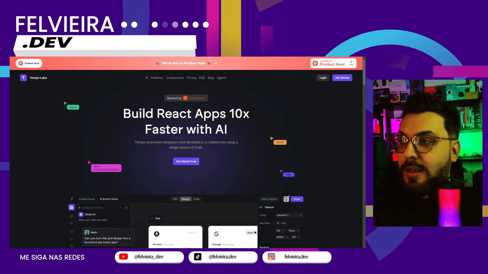
Após o cadastro, os usuários são apresentados a uma interface amigável, onde podem explorar as funcionalidades disponíveis. A primeira tarefa envolve a criação de um projeto, onde é possível definir o escopo e os objetivos do produto que será desenvolvido.
O Tempo Labs oferece uma série de templates e recursos que ajudam na construção do design, permitindo que os usuários arrastem e soltem componentes diretamente na tela. Essa abordagem facilita a visualização e a edição do projeto em tempo real.
🔍 Exploração da Interface do Tempo Labs
A interface do Tempo Labs é um dos seus maiores atrativos. Com um design limpo e moderno, ela permite que os usuários naveguem facilmente entre as diversas funcionalidades. A estrutura é organizada de forma que todas as ferramentas necessárias estejam ao alcance, facilitando o fluxo de trabalho.
Os usuários podem acessar uma biblioteca de componentes que podem ser utilizados em seus projetos. Esses componentes são personalizáveis, permitindo que cada projeto tenha uma identidade única.
A interação com a interface é fluida, embora alguns usuários relatem que a velocidade pode variar dependendo da complexidade do projeto. Apesar disso, as funcionalidades disponíveis compensam qualquer lentidão ocasional.
⚖️ Comparação com o Bolt
Ao comparar o Tempo Labs com outras ferramentas como o Bolt, é evidente que cada uma tem suas particularidades. O Bolt, por exemplo, é conhecido por sua eficiência em gerar código rapidamente, mas pode carecer de algumas funcionalidades de design que o Tempo Labs oferece.
Uma das principais diferenças é a integração entre design e código no Tempo Labs. Enquanto o Bolt se concentra mais na geração de código, o Tempo Labs busca um equilíbrio, permitindo que os usuários visualizem e ajustem seus designs antes de gerar o código final.
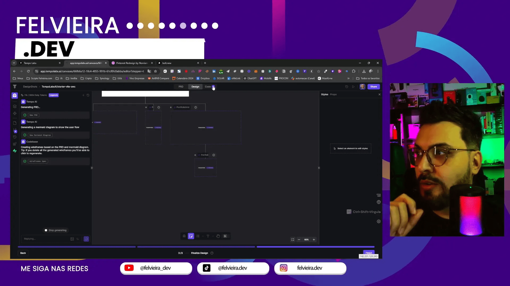
Além disso, o Tempo Labs permite uma colaboração mais dinâmica entre desenvolvedores e designers, promovendo um ambiente de trabalho mais colaborativo. Essa abordagem pode ser especialmente benéfica em equipes onde a comunicação entre as partes é crucial para o sucesso do projeto.
📊 Análise da Qualidade do Código Gerado
A qualidade do código gerado pelo Tempo Labs é um ponto crucial a ser considerado. A ferramenta, apesar de sua eficiência, ainda apresenta desafios em relação à clareza e organização do código final. Muitas vezes, o código gerado não é tão legível quanto o esperado, exigindo que desenvolvedores mais experientes façam ajustes significativos.
Um dos principais problemas observados é a duplicação de componentes. O Tempo Labs tende a criar múltiplas instâncias de um mesmo componente, o que pode levar a um aumento desnecessário na complexidade do código.
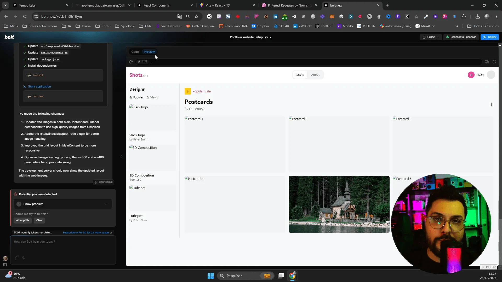
Isso gera um cenário onde a manutenção se torna mais complicada, especialmente em projetos maiores. Para desenvolvedores que buscam uma solução mais robusta, essa característica pode ser um fator limitante.
🔧 Usabilidade e Funcionalidades do Tempo Labs
O Tempo Labs não apenas se destaca pela geração de código, mas também pela sua interface de usuário intuitiva. A usabilidade é um dos pontos fortes da ferramenta, permitindo que até mesmo iniciantes consigam navegar e utilizar suas funcionalidades com facilidade.
As funcionalidades incluem uma biblioteca abrangente de componentes que podem ser arrastados e soltos na tela de design. Essa abordagem facilita a prototipagem rápida e a visualização do produto final antes da codificação.
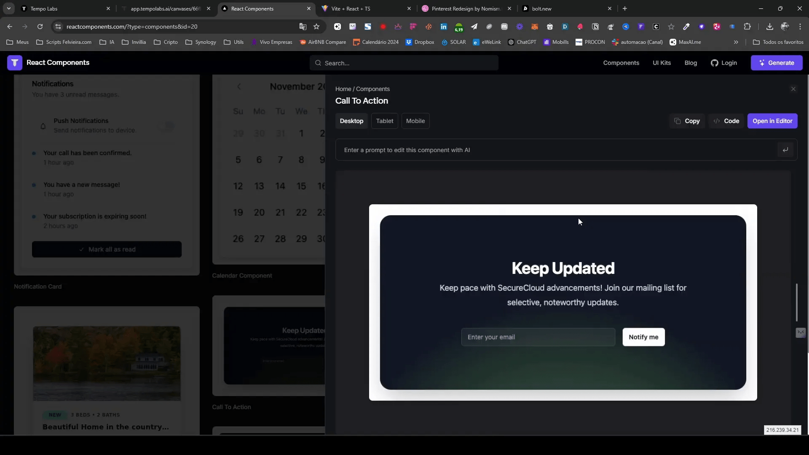
No entanto, a velocidade de resposta pode ser um desafio, especialmente em projetos mais complexos. Usuários relataram que a ferramenta pode ficar lenta em determinadas situações, o que pode frustrar o fluxo de trabalho.
Outro ponto a ser destacado é a integração com outras ferramentas, como o Figma. Embora o Tempo Labs ofereça essa funcionalidade, a implementação ainda precisa de melhorias para ser completamente eficaz.
📈 Recomendações de Uso do Tempo Labs
Para aproveitar ao máximo o Tempo Labs, é essencial que os usuários adotem algumas práticas recomendadas. Primeiramente, é importante ter um entendimento claro dos componentes que serão utilizados. Isso ajuda a evitar a duplicação e a confusão durante o desenvolvimento.
- Planejamento: Antes de começar a usar a ferramenta, faça um esboço do design e da estrutura do projeto.
- Testes frequentes: Realize testes regulares enquanto desenvolve para identificar problemas de usabilidade e desempenho precocemente.
- Documentação: Mantenha uma documentação clara sobre os componentes utilizados e as alterações feitas no código gerado.
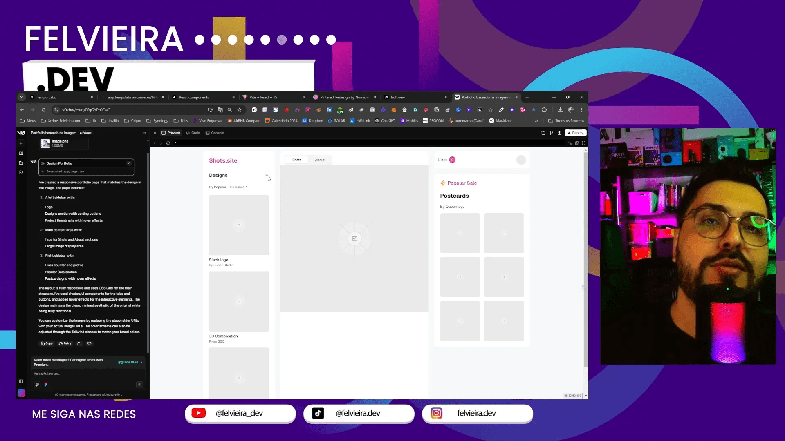
Essas recomendações podem ajudar a minimizar os desafios enfrentados ao usar a ferramenta e garantir um fluxo de trabalho mais eficiente.
⚔️ Comparação de Desempenho: Tempo Labs vs Bolt
Quando se trata de desempenho, a comparação entre Tempo Labs e Bolt é inevitável. Ambos têm suas vantagens e desvantagens, mas o Tempo Labs se destaca em termos de usabilidade e integração de design.
No entanto, o Bolt é conhecido por gerar código mais limpo e eficiente. Usuários que priorizam a qualidade do código podem achar o Bolt mais atraente, especialmente para projetos que requerem uma implementação mais robusta.
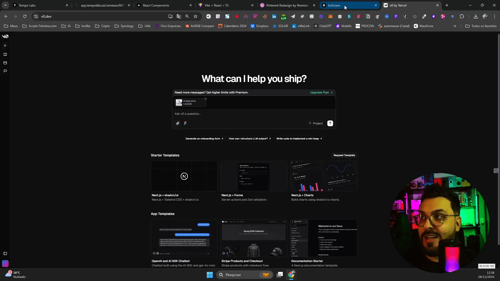
A diferença na abordagem de desenvolvimento é notável. Enquanto o Tempo Labs foca em uma experiência de design mais integrada, o Bolt prioriza a eficiência na geração de código. Para desenvolvedores que buscam um equilíbrio entre design e funcionalidade, a escolha pode depender das necessidades específicas do projeto.
🚧 Desafios e Limitações do Tempo Labs
Apesar de suas muitas funcionalidades, o Tempo Labs não está isento de desafios e limitações. Um dos principais problemas é a dependência da qualidade da entrada. O sistema requer que os usuários sejam detalhistas e precisos ao definir os componentes, caso contrário, o resultado final pode não ser satisfatório.
Além disso, a integração com outras ferramentas e plataformas ainda apresenta lacunas. A falta de uma conexão mais fluida com ferramentas populares pode limitar a adoção do Tempo Labs em equipes que já utilizam essas soluções.
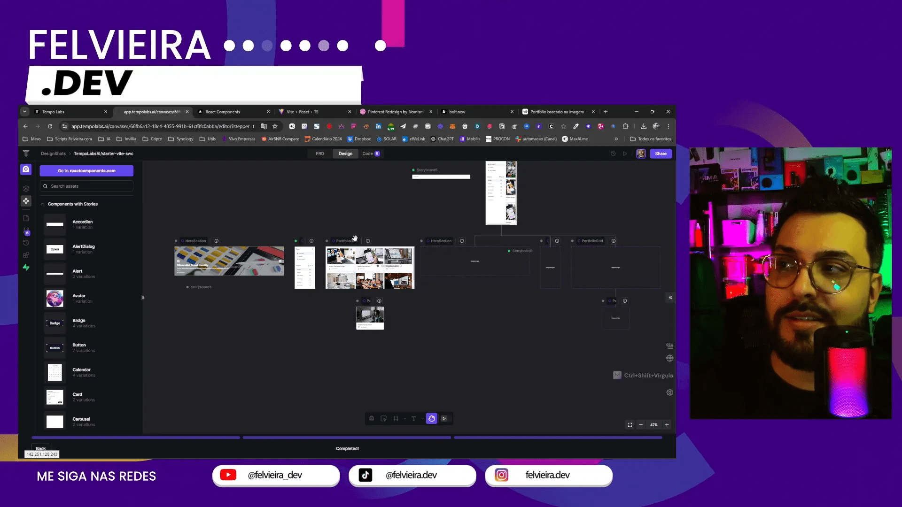
Por fim, a questão da escalabilidade é um ponto a ser considerado. Para projetos que buscam uma solução mais robusta e escalável, o Tempo Labs pode não ser a melhor escolha no momento, especialmente quando comparado a outras ferramentas que oferecem maior controle sobre o código gerado.
🚀 Próximos Passos no Desenvolvimento Frontend
À medida que a tecnologia evolui, o desenvolvimento frontend também se transforma. O uso de inteligência artificial no design e na programação abre novas portas para inovações e melhorias contínuas. Aqui estão algumas direções que os desenvolvedores podem considerar ao avançar em suas carreiras.
- Aprofundar-se em AI: Aprender mais sobre como a inteligência artificial pode ser aplicada na criação de interfaces e na automação de tarefas repetitivas é fundamental. Cursos e workshops podem ser ótimas opções.
- Experiência Prática: Trabalhar em projetos reais que integrem inteligência artificial e design frontend ajudará a solidificar o conhecimento adquirido e a entender os desafios práticos.
- Networking: Conectar-se com outros profissionais da área pode proporcionar insights valiosos e oportunidades de colaboração. Participar de eventos e comunidades online pode ser muito benéfico.
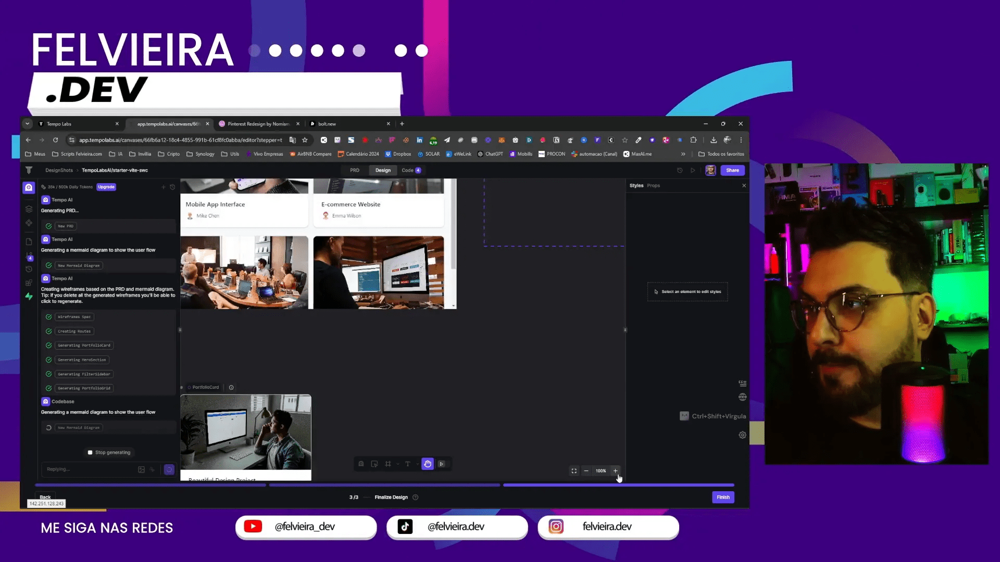
Esses passos não apenas ajudarão no crescimento profissional, mas também contribuirão para a criação de soluções inovadoras que utilizam inteligência artificial no desenvolvimento frontend.
💡 Dicas para Iniciantes em Desenvolvimento com IA
Começar no desenvolvimento com inteligência artificial pode ser desafiador, mas algumas dicas podem facilitar essa jornada. Aqui estão algumas sugestões valiosas para iniciantes.
- Estude os Fundamentos: Antes de mergulhar em ferramentas complexas, é vital compreender os conceitos básicos de programação e design.
- Explore Ferramentas: Familiarize-se com ferramentas como Tempo Labs e Bolt. A prática com essas plataformas ajudará a entender como a inteligência artificial pode ser aplicada no desenvolvimento frontend.
- Participe de Cursos: Aproveite cursos online que abordem desenvolvimento frontend e inteligência artificial. Aprender com especialistas pode acelerar seu entendimento.
- Realize Projetos Pessoais: Criar projetos pessoais é uma excelente maneira de aplicar o que você aprendeu e construir um portfólio.
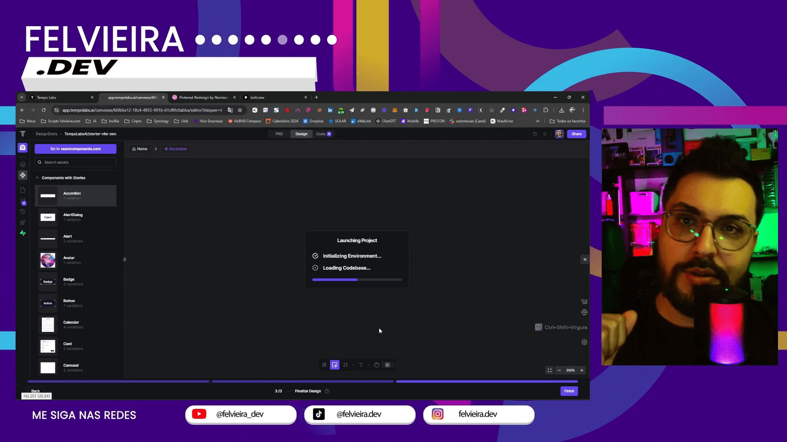
Essas dicas podem ajudar a moldar a carreira de um iniciante, dando a base necessária para explorar o vasto campo do desenvolvimento frontend e da inteligência artificial.
🌟 Benefícios da Integração de IA no Design
A integração de inteligência artificial no design frontend oferece uma gama de benefícios significativos. Esses benefícios não apenas melhoram a eficiência, mas também elevam a qualidade do produto final.
- Automação de Tarefas: A IA pode automatizar tarefas repetitivas, permitindo que os designers se concentrem em aspectos mais criativos e estratégicos do projeto.
- Personalização: Com a inteligência artificial, é possível criar experiências de usuário personalizadas, adaptando o design às preferências individuais.
- Eficiência no Fluxo de Trabalho: A integração de ferramentas de IA pode otimizar o fluxo de trabalho, reduzindo o tempo necessário para concluir projetos complexos.
- Melhoria Contínua: A IA pode analisar dados de uso e feedback dos usuários, ajudando os desenvolvedores a fazer ajustes e melhorias constantes no design.
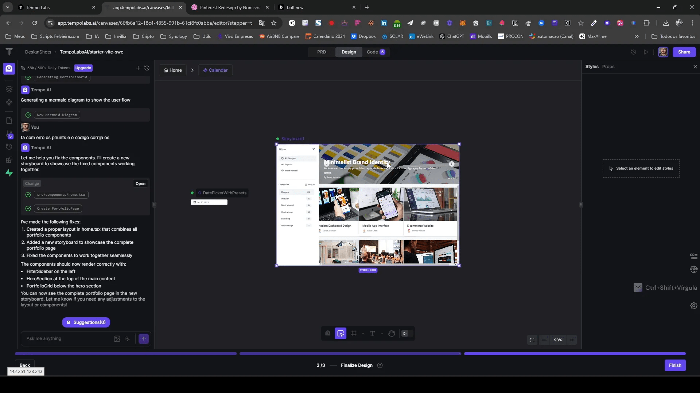
A adoção dessas tecnologias não só transforma a maneira como os produtos são criados, mas também eleva o padrão de qualidade do design frontend.
❓ FAQ sobre Inteligência Artificial no Desenvolvimento Frontend
Com o crescente interesse em inteligência artificial no desenvolvimento frontend, surgem diversas perguntas. Aqui estão algumas das mais frequentes.
- O que é inteligência artificial no desenvolvimento frontend? É a aplicação de algoritmos e técnicas de aprendizado de máquina para melhorar a criação de interfaces e a automação de processos.
- Quais ferramentas posso usar? Ferramentas como Tempo Labs e Bolt são exemplos que utilizam inteligência artificial para facilitar o desenvolvimento frontend.
- A IA pode substituir desenvolvedores? Embora a IA possa automatizar muitas tarefas, ela é uma ferramenta que complementa o trabalho humano, não uma substituição.
- Como a IA melhora a experiência do usuário? A inteligência artificial permite personalização e otimização, adaptando a experiência do usuário às suas necessidades e comportamentos.
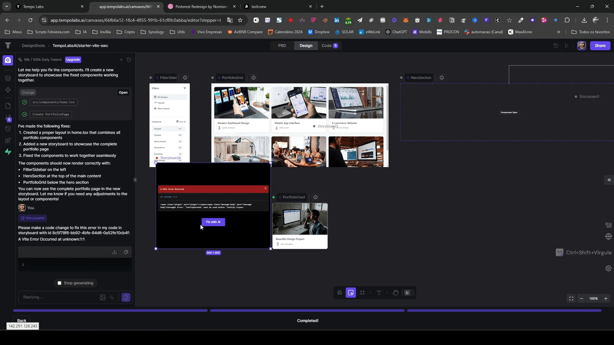
Essas perguntas e respostas ajudam a esclarecer o papel da inteligência artificial no desenvolvimento frontend e a sua importância crescente na indústria.